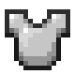

마지막 저장 시점의 장비·스킬·특성을 가져옵니다.
장비·옵션은 아이템별로 저장되며 부위·접사 종류·중복·등급 범위를 검사합니다. 특성은 원본 트리 연결선을 사용합니다. 자유 연구를 켜면 경로와 포인트 제한을 풀 수 있습니다.
전투 비교는 기존의 직접 피해·속도·자원 모델입니다. 소환 AI, 지속 피해, 조건부 버프·장비 발동, 일부 룬워드·코덱스·인챈트는 완전히 재현하지 않습니다. 실제 게임 DPS와 같다고 해석하지 마세요.
화면의 장비 미리보기는 설치된 모델·텍스처를 렌더링한 이미지입니다. 실제 마인크래프트를 실행하거나 세이브를 변경하지 않습니다.